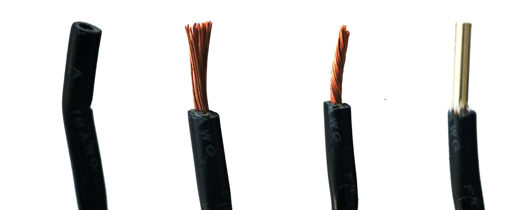
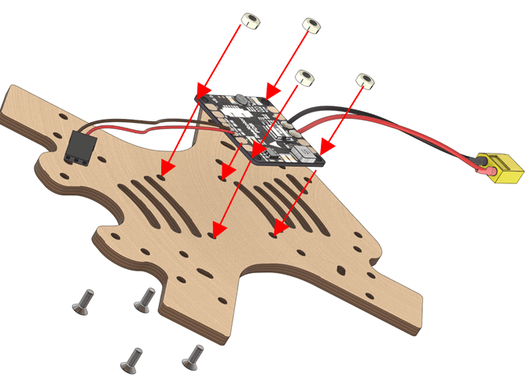
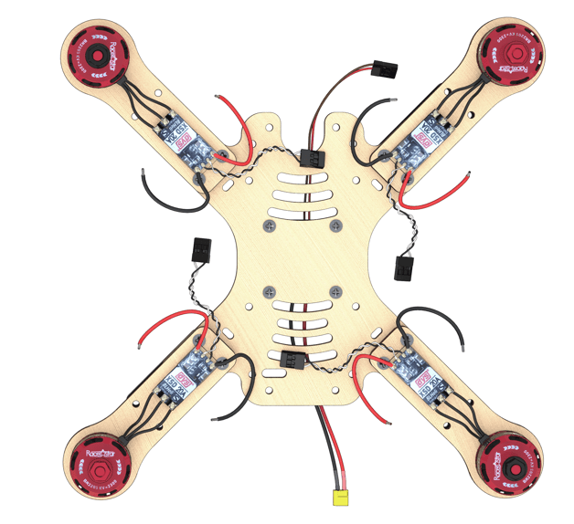
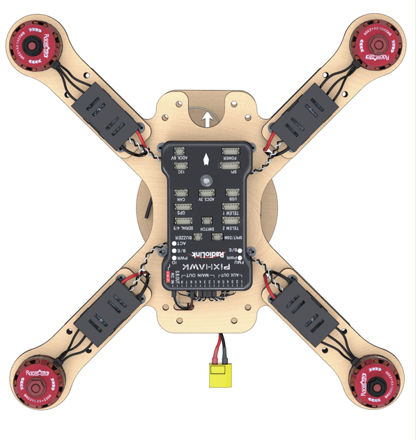

Clever 2 construction kit assembly instruction

The constructor kit contents

- Central frame ×2.
- Additional frame ×4.
- Beam ×8.
- Legs x8.
- Beam guard ×8.
- Propeller guard ×16.
- Side guard ×16.
- Dalprop 5045 plastic propeller ×4.
- Racerstar BR2205 2300kV brushless motor ×4.
- Speed adjusters ESC, DYS XSD20А ×4.
- Power controller XT60 pin ×1.
- Power connector XT60 socket ×1.
- Three-wire female-female flat cable ×2.
- Wire copper multicore silicone insulated cable 14AWG (red, black), 50 cm long
- Power distribution board PDB BeeRotor Power Distribution Board V2.0 ×1.
- Li-ion rechargeable battery (battery) 18650 ×8.
- EFEST Luc V4 Li-lon Charger ×1.
- Regulators protective case ×4.
- Legs attachment ×8.
- Pixhawk flight controller ×1.
- FlySky i6 radio receiver×1.
- FlySky i6 radio transmitter ×1.
- EFEST LUC V4 Charger ×1.
- Micro USB to USB Cable ×1
- Battery compartment 18650 li-Ion ×1
- Wire copper multicore silicone insulated cable 18AWG (red, black), 100 cm long
- AA battery ×4
- Jumper, Bind-plug
Fasteners
- 6 mm plastic legs ×28.
- 30 mm plastic legs ×32.
- М3х8 screws ×48.
- М3х12 screws ×24.
- М3х16 screws ×40.
- Plastic nuts ×8.
- Metal nuts ×48.
- Stickers for the compartment battery ×8.
- Thermal contraction tube ⌀15, .50 cm
- Thermal contraction tube ⌀5, 100 cm
- Double-sided 3M adhesive tape ×16.
- Screwdriver ×1 (visualization needed)
- Insulation tape ×1
- Stationery scissors ×1
- Strap for the battery 250 mm ×1
Functionality of the Flysky i6 transmitter
- Switch A (SwA).
- Switch B (SwB).
- Switch (SwC).
- Switch D (SwD).
- Left stick.
- Right stick.
- Left trimmer.
- Right trimmer.
- Up button.
- Down button.
- OK button.
- Cancel button.
- BIND KEY button.
- POWER switch.
- LCD.
- Handle A (VrA).
- Handle B (VrB).
Additional equipment
This equipment is not part of the Clever 2 constructor kit, but it is required for the assembly process
- Soldering iron
- Colophony/ Flux (neutral)
- Solder
- Hot air gun
- Pliers
- Pincers
- Stationery knife
- Multimeter

Assembly order
Installation of motors
- Unpack the motors. Using pliers, shorten the wires on the motors by cutting half the length (leaving about 25 mm).
Strip
- remove 2 mm of insulation from the ends of the wire without damaging the copper strands.
Twist the wires.
Blanch
- Apply flux to the exposed part of the wire.
- Cover the solder using tweezers.

Fix the motor on the beam
- Install the motor on the engraved side of the beam.
- Attach the motors to the beams with М3х8 screws using a screwdriver.

- Beams with motors should be arranged according to the diagram. The arrows indicate the direction of motors rotation.

Blanch three contact pads of the adjuster
- Apply flux
- Apply solder
To make solder neatly fill the entire pad, warm up the contact pad of the adjuster. For this purpose, hold the tip of the soldering gun to the contact pad for 2 seconds (or more if needed)
- Repeat this operation for the remaining three ESC
Solder the wires of the motors to the ESC
Solder the prepared wires of the motors to the pads of ESC.

- Repeat this operation for the remaining three ESC
Installation of power connectors
Preparing wires for XT60 power connectors
- Take a bundle of red and black wires marked 14AWG
Cut 4 pieces of wire of the following lengths
Length 7 cm (XT60 pin power connector) - 1 red, 1 black
- Length 9 cm (XT60 socket power connector) - 1 red, 1 black

Preparing XT60 pin and XT60 socket high-power connectors
Article about high-power connectors and their designations

- Blanch two red and black 14AWG power wires 7 cm long for the XT60 pin connector .
- Blanch contact pads of the XT60 pin connector.
- Solder the black wire to the “-” contact of the connector.
- Solder the red wire to the “+” contact of the connector .
- Cut ⌀5 thermal contraction tube (2 sections × 10 mm).
- Put the ⌀5 thermal contraction tube on the wires so that it covers the contact pads of the wires from XT60.
- Shrink the thermal contraction tube with a hot air gun.

- Repeat the procedure for XT60 socket connector.
Preparation of the power connector for the 5V control circuit
- Trim/pull all pins from one of the connectors. Disconnect it.
- Using a utility knife, pry the retainer off on the remaining connector to release the 3rd wire.
- Remove the 3rd (orange) wire from the connector, since it is not needed.
- The length of the remaining black and red wires should be 10 – 12 cm.

Installation of the power distribution board
Pre-soldering check

Check OPEN CONDITION of the following circuits (absence of the multimeter sound signal):
- “BAT+” and “BAT-”
- “12V” and “GND”
- “5V” and “GND”
Check CLOSED CONDITION of the following circuits (presence of the multimeter sound signal):
- “BAT-” with every contact marked “-” and “GND”
- “BAT+”, with every contact marked “+”
Blanch the contact pads of the power board
- [Blanch*] (zap.md) the contact pads of the power board
- Using a multimeter, check absence of contact closure on the PCB (check continuity)
To make solder neatly fill the entire pad, it should be warmed up. For this purpose, hold the tip of the soldering gun to the contact pad for 2 seconds (or more if needed)
Soldering the XT60 high power connector
Solder the connector for battery, observing polarity on the contact pads.
IMPORTANT NOTE about polarity
- the red wire is “+”
- the black wire is “-”
Soldering of the power connector for the 5V control circuit
Solder the 5V connector, observing polarity on the contact pads. (in the picture: the red wire is “+”)
Installation of the battery compartment
Preparation of jumpers (3 pcs.)

- Cut off 2 cm length of the high-power wire
- Strip on both ends.
- Blanch
- Make 3 jumpers
- Solder the jumpers according to the diagram.
- Check continuity with a multimeter. If necessary, clean with sand paper.
Preparation of the battery compartment

- Glue a sticker with marking to the inside of the battery compartment in accordance with the polarity.
- Stick a strip of adhesive tape to the bottom of the compartment.
Installation of the power distribution board
- Fix the power board to the frame with М3х8 screws and plastic nuts. 
An arrow on the board points to the fore cutout

Installation of elements
- Install the nuts into plastic holders.

- Fix the beams to the frame with М3х16 screws
- The beams are installed on top of the frame
- Plastic holders are installed on the bottom of the frame.

- Arrangement of motors. Check arrangement of the motors (the motors with black nuts should be in the top left and lower right corners). 
- Put the power wires of the ESC through the holes.

Soldering the high-power circuit board
Solder the high-power wires of the ESC to the power supply board observing polarity.

IMPORTANT NOTE about polarity
- the red wire is “+”
- the black wire is “-”
Pairing the receiver and transmitter
- Connect the radio receiver to the 5V connector. In any connector, GND in the bottom. In the diagram, the power is labeled 5V
- Connect the battery. The LED on the radio receiver should be flashing. ![Connecting the battery]
SAFETY when working with the battery

Enabling the transmitter
- Insert the jumper into B/VCC of the radio receiver (short-circuit "ground" and "signal")
- On the transmitter, hold down the BIND KEY button.
- Power up the transmitter (flip the POWER switch, do not release BIND KEY).
- Connect the battery to the copter.
- Wait for synchronization.
- Disconnect the jumper.
- The LED will remain ON continuously.

Radio equipment troubleshooting manual
Checking the motors rotation direction
- Apply stickers to the 18650 battery.
- Install the 18650 battery into the compartment observing polarity.

- Check that the 5V power plug is connected to the receiver according to the circuit diagram.
- Connect the motor ESC to channel 3 of the CH3 receiver according to the circuit diagram.

- Connect external power (battery).
- Turn the transmitter ON
- Using the left stick, set throttle to 10 %.
- Check the motor rotation direction according to the scheme.

- If you have to change the rotation direction, toggle any two phase wires of the motor (needs resoldering).
Installation of the radio receiver
- Install the 30 mm plastic legs on the frame with М3х8 screws.
- Pass the 5V power connector through the slot.

- Attach the receiver to the bottom of the additional frame using double-sided adhesive tape and noting the engraving. The antennas are to be pointing forward.

- Install the 3-wire flat cable into the PPM / CH1 channel.

- Pass through the slot to the 5 V connector.
- Screw the bottom an additional frame to the legs on the central frame with М3х8 screws.

The directions of the arrows on the power supply board and the additional frame should coincide
Installation of the flight controller
Turn the assembly upside down

Installation of the Pixhawk flight controller
- Stick the two-sided adhesive tape in the corners of the flight controller.
When the motors rotate, vibrations occur, which affect sensors of the Pixhawk flight controller. To avoid this effect, the number of double-sided tape layers should be increased up to 4 – 5.
- Install the flight controller in the center of the frame.

The arrows on the frame and Pixhawk should point in the same direction
Connecting the flight controller according to the circuit diagram
- Connect PPM (three-wire flat cable) to the RCIN port
- Motors to MAIN OUT ports 1,2,3,4, according to the circuit diagram
Power by PDB (5V/VCC) to any port except for SB (SBUS)

ESC assembly
- Stick the double-sided adhesive tape to the base of ESC protective case

- Put the ESCs into protective cases. Fasten the assembly to the beams of the frame. 
Installation of guard
- Attach the lower guard with М3х16 screw to the beams of the frame.

- Attach the feet to the plastic holders with М3х16 screws.

- Attach the 30 mm long legs to the holes of the lower guard with М3х12 screw.

- Attach the top guard with М3х12 screws.

Installation of the battery compartment
Requires the following components:
- М3х12 screws (4 pcs)
- M3 nuts (4 pcs)
- Additional frame (1 pc)
Battery compartment (1 pc)
Attach the battery compartment on the top additional frame with М3х12 screws and nuts.

- Attach the top additional frame to the legs with М3х8 screws.
- Install the battery into the battery compartment.
Installation of antennas
- Attach antennas on double-sided adhesive tape or duct tape, and put the antennae into the front holes of the top additional frame.

The copter is ready for configuration!
Safety notes for assembly ans configuration
- Remove the propellers.“All ground operations are to be performed with propellers removed. Propellers are to be installed on the motors before the flight only.”
- Disconnect the battery. Keep the power off. “Assembly, configuration, and maintenance should be performed with power disconnected. Connect power only for testing electronic components of the copter. After testing, power is to be disconnected before other works.”
- Call for help. “If you experience problem when completing the task, contact the instructor or the teacher, do not try to solve the problem yourself.”

Security when working with 18650 Li-ion batteries
- Handle batteries carefully. Avoid falls, bumps, and deformations.
- When connecting (disconnecting) batteries, hold only the connectors, never pull or tug the wires.
- If you see open connectors, violation of insulation or battery compartment integrity, do not touch it, and immediately inform the instructor.
See article safety precautions when soldering and during copter flight operation